Activity: Using the Selection Manager
This activity guides you through the process of using the Selection Manager.
-
Open select_b.par.
Use Selection Manager to select all rounds of equal radius and change the radius value for all the rounds selected.
Activate the Selection Manager mode by either choosing on the Home tab→Select group, from the Select list or by pressing Shift+Spacebar.
Select the round shown below.
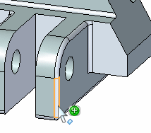
On the Selection Manager menu, make sure Use Box Selection is not checked.
On the Selection Manager, click the Equal Radius option. Notice that all rounds that have the same radius (1.5 mm) add to the select set.
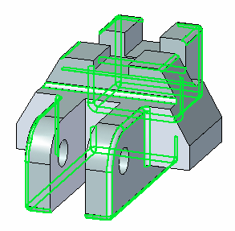
Press the Spacebar to exit the Selection Manager mode.
Select the PMI dimension on the round.
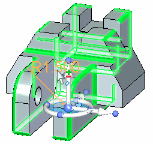
In the dimension box, type 2 and then press the Enter key. Press Escape to clear the select set. All rounds in the select set are now equal to 2.
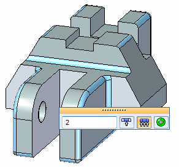
Add rounds to a select set using a selection box.
Activate the Selection Manager.
Select the round shown.
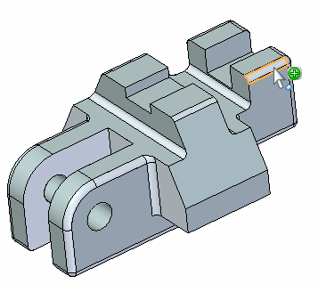
On the Selection Manager menu, choose Use Selection Box.
On the Selection Manager menu, choose Equal Radius.
-
The first step in defining the selection box is to define the area. Typing a C changes the area definition from a corner start point (1) to an area center start point (2). The start point is the point where you select the face.
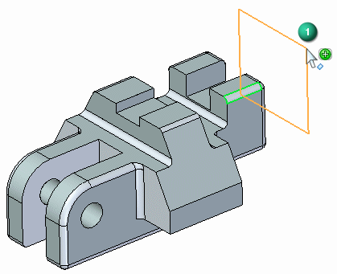
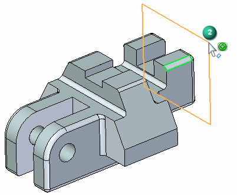
Use the center option and define an area as shown.
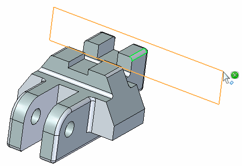
The next step is to define the select box depth. Typing an S changes the definition from a side definition (3) to a symmetric definition (4). Side step defines depth in either direction (3) normal to the defined area. The symmetric option defines the depth symmetric (4) about the defined area.
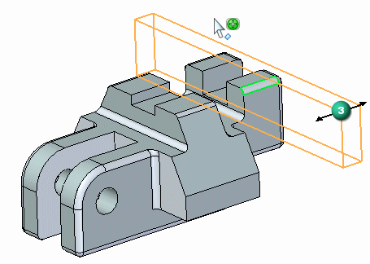
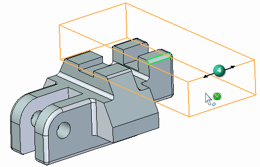
Define a symmetric depth as shown.
You can rotate the view to better view the positioning of the area and the depth of the selection box.
Press the Spacebar to exit the Selection Manager mode.
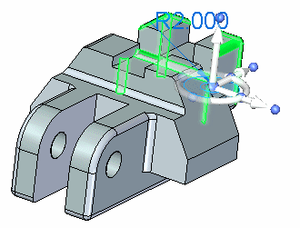
When selecting the radius value, make sure that the Selected Faces Only option is set.
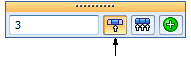
Change the selected rounds radius to 3.
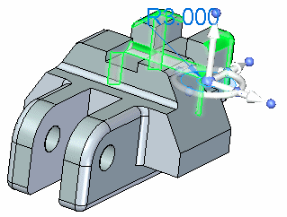
Press the Escape key to clear the select set.
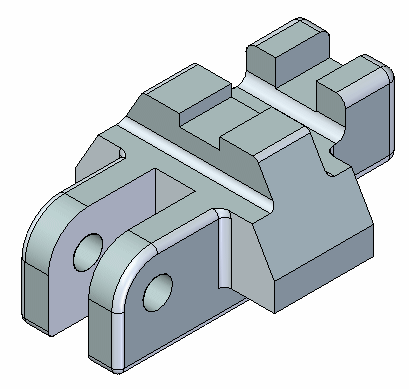
This completes the activity.
In this activity you learned how to use the Selection Manager to control the selection process. With practice you will master the use of the box selection.
-
Click the Close button in the upper-right corner of the activity window.